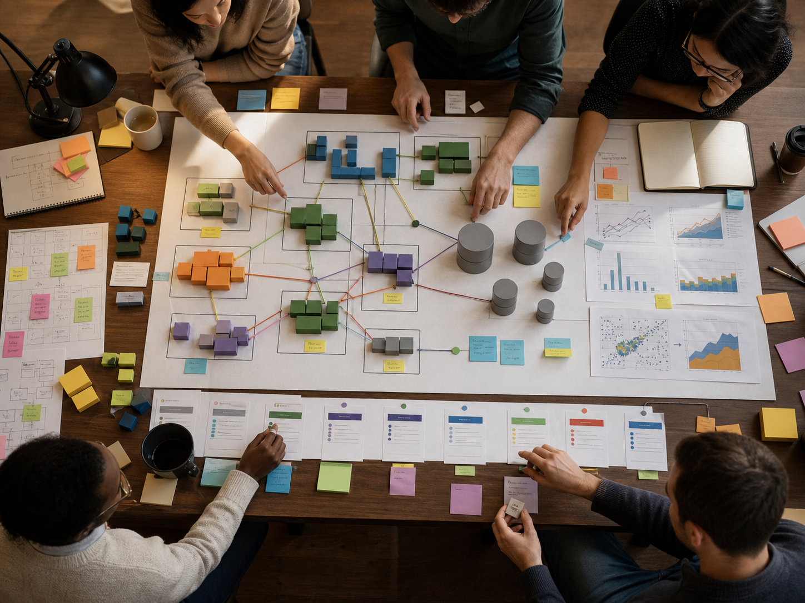

從「架構漂亮」到「影響落地」
這支影片最刺耳的一句話，是把許多工程師心中珍惜的 craft 拉回職場現實：專業軟體工程不是練習嗜好。主持人與 Bassem 反覆回到同一個尺度：你的設計最後落在什麼業務影響上？它讓收入成長、客戶增加、使用者痛點減少，還是只是讓架構圖看起來更像大公司？
這不是否定工程品質。相反地，它要求品質必須有上下文。GitHub 這種平台需要在 feature flag、授權、驗證、安全、漸進部署與大規模營運上做更嚴格的設計，因為錯誤會被放大，甚至成為公共事件。但同一套尺度搬到小公司或早期產品，常常只會讓團隊在尚未證明需求之前，就先被維運成本拖住。
下一個量級，而不是一百倍幻覺
Bassem 提出一個對 SWE 很實用的心法：設計到下一個 order of magnitude。今天是百位使用者，就先能承受千位；已經到十倍瓶頸，再談下一層架構。這種說法聽起來保守，其實更像財務紀律。因為軟體不是一次買斷的建設，它會持續需要投資、遷移、改寫與營運，而這些成本在會議室裡常常被低估。
影片裡談到一個 startup 差點被 Kubernetes migration 拖垮的案例，重點不在 Kubernetes 好壞，而在時間點。當團隊還沒有足夠需求曲線、可靠瓶頸與人力承載能力時，把複雜平台搬進來，可能不是擴張能力，而是提前支付一筆尚未到期的債。
這也是為什麼他願意說，很多時候從單一 VM、垂直擴展、一般關聯式資料庫開始就夠了。對資深工程師而言，簡單不是幼稚；簡單是在知道複雜度價格之後，仍然克制地只買需要的部分。

AI-generated editorial image, not a video screenshot.
架構設計也是 stakeholder research
影片中最有現場感的片段，是 Bassem 回憶在貨櫃碼頭產業工作。他不是只在辦公室推導 latency，也坐上卡車，觀察司機、碼頭作業與危險場景。因為在那種環境裡，軟體失誤可能不只是使用者不滿，而是實際的安全風險。
這段讓 system design 的定義變寬：你要理解誰在付錢、誰承擔風險、誰每天被系統卡住、誰會在停機時被追責。否則工程師很容易把「技術上正確」當成唯一正確，卻無法說服決策者投資下一輪重構，也無法辨認現在其實不是重構時機。
對 SWE 來說，這是升級路徑中最容易被忽略的一步。你不只是把需求轉成程式；你要把不確定的商業語言、使用者痛點、營運風險與技術限制，翻譯成可討論、可驗證、可分階段投資的設計。
AI agent 讓判斷更值錢
訪談後段轉向 AI coding。Bassem 提到自己在 GitHub 使用 VS Code agent mode，甚至大量程式由 agent 產生。但他的結論不是「工程師不用懂細節」，而是相反：當 agent 能更快產出程式，工程師更需要把注意力移到營運問題、bug 風險、benchmark、data access pattern 與可部署性。
他舉 Redis cache key 的例子：不同 key structure 會導致不同資料存取模式，也會對 Redis 造成不同影響。agent 的價值，是把多個 benchmark 快速寫出、執行、分析，讓工程師更快看見證據。真正的設計決策仍然在人的手上：你要知道該問什麼問題、該驗證什麼假設，以及什麼結果代表可以承擔風險。
這對正在使用 AI 的 SWE 是一個提醒：AI 可以降低實作摩擦，但不會替你承擔系統後果。當寫 code 的成本下降，錯誤設計被放大的速度也會上升。
資深不是把每件事做到極致
影片最後把工程師的成長拉回學習能力。Bassem 認為未來需要快速進入陌生領域、取得功能性熟練度，並選少數主題追求真正精通。這不是叫人放棄品質，而是承認時間、資源與注意力都是有限的。
他也談到年輕時更迷戀 craft，後來才理解商業資源並非無限。有些程式會長期無人碰觸，只要穩定工作就足夠；有些系統則需要被嚴格設計，因為一旦出錯，影響會穿透組織。資深工程師的難處，正是在這兩者之間不斷校準。
所以這集給 SWE 的核心訊息，不是「多學 system design 面試題」。而是：把系統看成一組正在演化的承諾。你承諾目前規模下的可靠性，承諾下一個量級的可遷移性，承諾向非工程 stakeholders 說清楚成本與風險，也承諾不把尚未證明的未來，提前變成今天團隊的負擔。